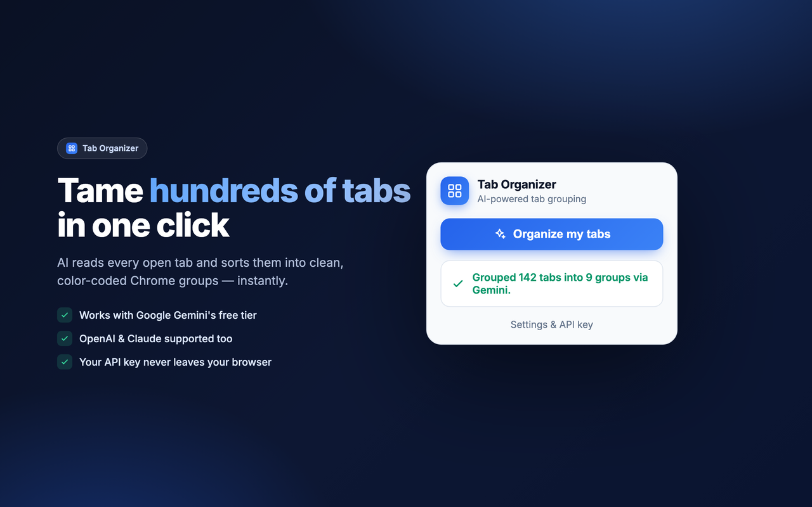
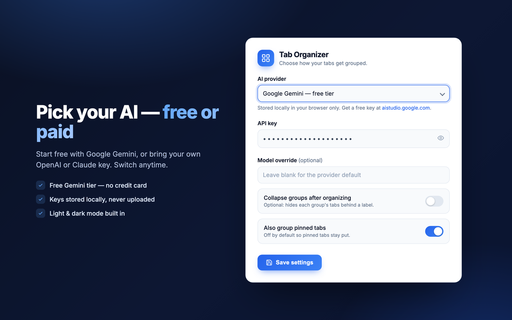

One-click sorting
Click once and watch dozens — or hundreds — of tabs snap into named, color-coded groups.
Free with Google Gemini
AI reads every open tab and sorts them into clean, color-coded Chrome groups — by topic and project, not just by site.

Everything you need to go from chaos to order, without giving up your privacy.
Click once and watch dozens — or hundreds — of tabs snap into named, color-coded groups.
Find any tab by title, URL, or group as you type — then jump to it in one click. 100% local, no AI cost.
Run fully on-device with Chrome's free built-in Gemini Nano, use Gemini's free tier, bring an OpenAI / Claude key, or group by domain — no key.
No servers, no tracking, no data sale. Your key stays in your browser. Read the policy →
Start it, close the popup, walk away. The job finishes in the background and resumes when you reopen.
A polished, modern interface that follows your system theme automatically.
It only groups — never closes — your tabs. Pinned tabs are left untouched by default.
Drop in a free Gemini key (or OpenAI / Claude) in Settings — or skip it for offline domain grouping.
The AI reads your tab titles & URLs and decides the best topic-based groups.
Named, color-coded Chrome groups appear instantly. Re-run anytime as new tabs pile up.

Free to start with Gemini. Your data never leaves your browser except for the provider you choose.
View on GitHub